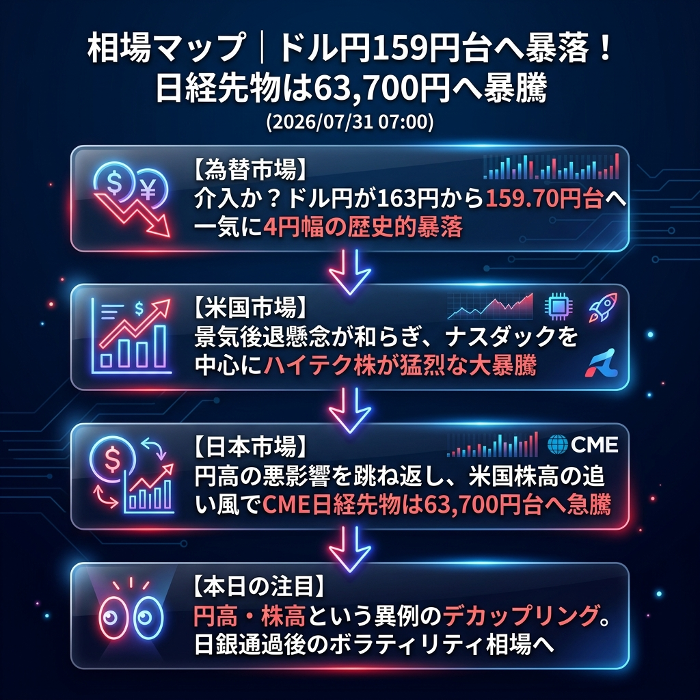

昨晩から今朝にかけて、市場に歴史的な激震が走りました。ドル円は163円台から159.70円台へと、一気に4円幅の異常な暴落（円高急進）を記録しました。介入の有無や日銀の余波など思惑が交錯していますが、強烈な円高にも関わらず、米国ハイテク株の猛烈な暴騰（ナスダック先物28,300ポイント超え）に牽引される形で、CME日経先物は63,700円台へと急騰しています。「円高・株高」という異例のデカップリング相場が到来しています。
「ドル円159円台への歴史的暴落（介入疑惑）」と「米国株高が主導する日経平均の暴騰」。
NY時間に入り、米国市場ではメガテック決算への期待や景気後退懸念の後退から、ナスダックを中心に強烈なリスクオン（株買い）の波が押し寄せました。
一方で為替市場では、ドル円が突如としてナイアガラのような暴落を開始。163円台から159.70円台まで一直線に急落しました。日銀通過後のキャリートレードの巻き戻し（円の買い戻し）が一斉に起きたのか、あるいは覆面介入が入ったのか、極めて不穏な動きとなっています。通常であればこれほどの円高は日本株の大暴落を招きますが、それを力ずくでねじ伏せるほどの「米国株の爆上げ」が日経先物を押し上げています。
| 指数・銘柄 | 現在値 | 前回比（前日比） | 騰落率 | 確認事項 |
|---|---|---|---|---|
| S&P 500 (ES=F) | 7,473.50 | +1.00 | +0.01% | 高値圏を維持 |
| Nasdaq (NQ=F) | 28,361.75 | +124.00 | +0.44% | 【大暴騰】メガテックに買い殺到 |
| Dow (YM=F) | 52,403.0 | +23.0 | +0.04% | 堅調に推移 |
| 日経225現物 | 61,867.43 | 0.00 | 0.00% | 前日大引け値 |
| CME日経225先物 | 63,765.0 | +40.0 | +0.06% | 【暴騰】円高を無視して63,700円台へ |
| USD/JPY | 159.725 | -3.655 | -2.24% | 【暴落】163円から159円台へ急落 |
| EUR/USD | 1.1530 | +0.0065 | +0.57% | ユーロ急伸、ドル全面安 |
| 金 | 4,166.1 | +5.5 | +0.13% | ドル安を背景に上値追い |
| 原油 | 84.21 | +0.62 | +0.74% | 84ドル台を回復 |
| BTCUSD | 64,866.96 | +964.06 | +1.51% | ナスダック高に連動し上昇 |
本日（金曜日）の東京市場は、極めて難解なスタートとなります。日経平均は「米国株の大暴騰」という特大の好材料と、「ドル円の4円幅の円高」という特大の悪材料を同時に織り込むことになります。
寄り付きはCME先物にサヤ寄せして63,500円前後で高く始まる公算が大きいですが、輸出企業への業績悪化懸念から、寄り天（寄り付きが天井）となって急反落するリスクも十分にあります。乱高下は必至です。
東京市場オープン後、国内の輸出企業や機関投資家が「159円台の円高は想定外の業績悪化をもたらす」と判断し、日本株を猛烈に売り叩いた場合。CMEの63,700円は完全に幻となり、日経平均は62,000円割れへと一気に値を消す「寄り天大陰線」のシナリオとなります。